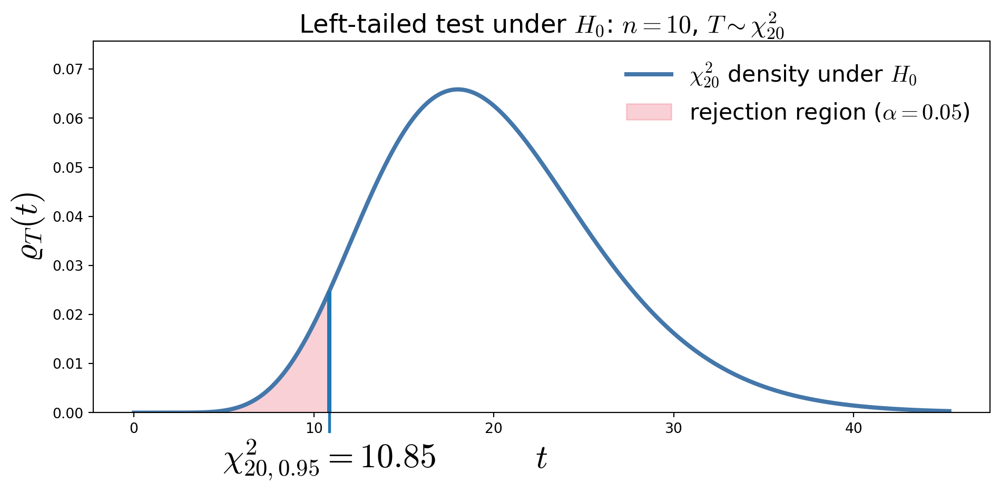
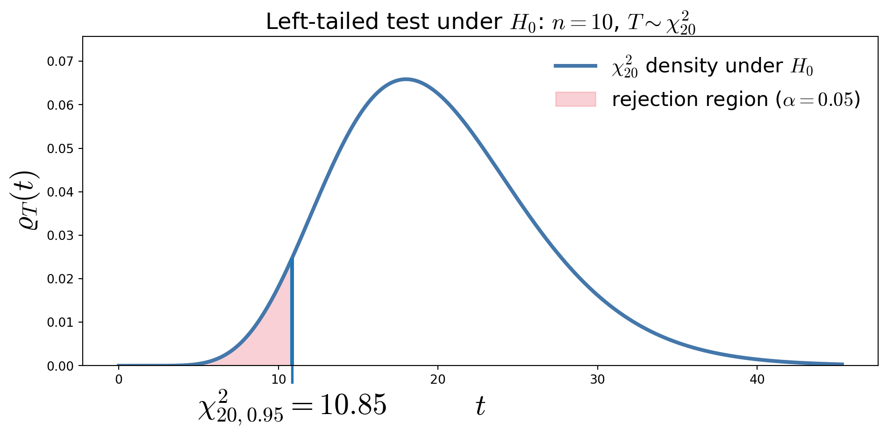
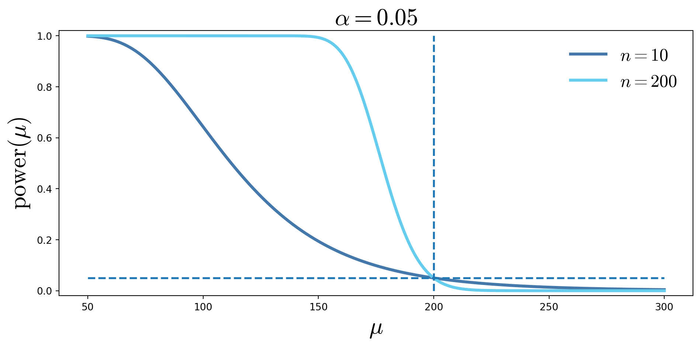

Hypothesis Testing
Casella & Berger Ch. 8
February 22, 2026
Null hypothesis \(H_0\) — the default assumption, innocence, often “no effect” or “status quo”
Alternative hypothesis \(H_A\) — guilty, the claim requiring evidence
Test statistic \(T(\vX)\) — a function (summary) of the data, \(\vX = (X_1, \ldots, X_n)\), used to assess \(H_0\)
Rejection region \(\RR\) — values of \(T(\vX)\) for which we reject \(H_0\)
Type I error \(\alpha\) — reasonable doubt, probability of falsely rejecting \(H_0\)
\(p\)-value — (under \(H_0\)) probability of observing a result at least as extreme as the one observed
Type II error \(\beta\) — probability of failing to reject \(H_0\) when \(H_A\) is true
Power \(1-\beta\) — probability of correctly rejecting \(H_0\)
Hypothesis testing is a formal way of deciding whether the data provide enough evidence to overturn a protected default assumption
We will use ideas from estimation, confidence intervals, and pivots to construct tests
Suppose
\[ X_1,\dots,X_n \IIDsim \Exp(1/\mu), \qquad \Ex(X)=\mu \]
Here
\(X_i\) is the time between unexpected server failures (e.g., crashes/outages) for a particular service
The provider claims the mean time between failures is \(\mu_0 = 200\) hours
We want evidence that reliability has worsened, i.e. failures are happening more frequently
Use the pivot \(\displaystyle \frac{2n\barX}{\mu} \sim \chi^2_{2n}\)
so that under \(H_0: \mu = 200\) \[ T(\vX) = \frac{2n\barX}{200} \sim \chi^2_{2n}\]
Choose \(\alpha = 0.05\) as the maximum tolerable risk of falsely accusing underperformance
Left-tailed test:
\[ \RR = \left\{ T < \chi^2_{2n,1-\alpha} \right\} \]
Equivalently, reject when
\[\barX < \frac{200}{2n}\,\chi^2_{2n,1-\alpha}\]

Let
\[n=10,\qquad \barX=176\]
Then \[T_{\text{obs}}=\frac{2(10)(176)}{200}=17.60\]
The \(p\)-value is
\[p=\Prob\big(\chi^2_{20} \le 17.60\big) \approx 0.39\]
Reject \(H_0\) iff \(p\le \alpha\)So we do NOT reject \(H_0\) at the \(\alpha=0.05\) level
Type I error \(\alpha\):
Falsely conclude that reliability has worsened when the true mean time between failures is 200 hours \[\alpha=\Prob(\text{reject }H_0\mid \mu=200)\]
Type II error \(\beta(\mu_1)\) (for some \(\mu_1<200\)):
Fail to detect that the system is less reliable than claimed \[ \beta(\mu_1) = \Prob(\text{fail to reject }H_0 \mid \mu = \mu_1) \]
Power function \(\power(\mu_1)\)
The probability of correctly detecting reduced reliability (for some \(\mu_1<200\))
\[ \power(\mu_1) = \Prob(\text{reject }H_0 | \mu = \mu_1) = 1-\beta(\mu_1) \]
From Step 3, we reject \(H_0\) when
\[T=\frac{2n\barX}{200} < \chi^2_{2n,1-\alpha}\]
If the true mean is actually \(\mu_1\), then \[\frac{200 T }{\mu_1} = \frac{2n\barX}{\mu_1} \sim\chi^2_{2n}\]
Therefore the power function is \[\begin{align*} \power(\mu_1) &= \Prob\!\left(T < \chi^2_{2n,\,1-\alpha}\mid \mu=\mu_1\right) = \Prob\!\left(\frac{200\,T}{\mu_1} < \frac{200\,\chi^2_{2n,\,1-\alpha}}{\mu_1} \,\middle|\, \mu=\mu_1\right)\\ &= F_{\chi^2_{2n}}\!\left(\frac{200\,\chi^2_{2n,\,1-\alpha}}{\mu_1}\right)\qquad \text{increases as $\mu_1$ decreases.} \end{align*}\]

\[ H_0 \text{ null hypothesis (default, innocence) in terms of } \theta \qquad H_A \text{ alternative hypothesis (evidence, guilt) in terms of } \theta \]
\(H_0\) and \(H_A\) must be mutually exclusive
| Truth about \(H_0\) | Reject \(H_0\) | Do Not Reject \(H_0\) |
|---|---|---|
| \(H_0\) true | Type I error probability \(\alpha\) |
Correct |
| \(H_0\) false | Correct probability \(\power(\theta)\) |
Type II error probability \(\beta(\theta)\) |
| Confidence Interval | Hypothesis Test |
|---|---|
| An interval of plausible values | A decision |
| Random interval | Random decision |
| Statement about \(\theta\) | Statement about \(H_0\) |
| No special value privileged | Tests a specific value \(\theta_0\) |
| Both Use | Meaning |
|---|---|
| Level \(\alpha\) | Willingness to be wrong |
| Pivot / test statistic | Standardized measure of evidence |
| Sampling distribution | Controls coverage / Type I error |
\[ \theta_0 \text{ rejected at level } \alpha \iff \theta_0 \notin \text{corresponding } 1-\alpha\text{ confidence interval} \]
© 2026 Fred J. Hickernell · Illinois Institute of Technology · MATH 563 — Mathematical Statistics Course Website · \(\exstar\) = exercise for the reader